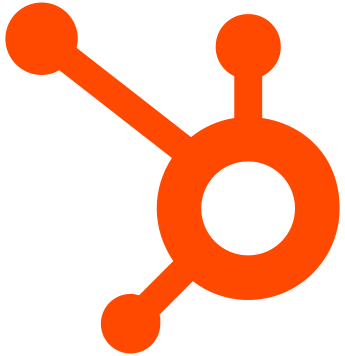

Hela teamets vardag på ett ställe.
Company Brain läser dina mejl, affärer, kalendrar och fakturor och visar varje person vad som behöver göras i dag. Du kan fråga den om verksamheten och sköta offerter, avtal och rapporter på samma ställe. Vi sätter upp den för ditt företag, och den körs i EU.
Prova som vd och som säljare.
Byt vy uppe till höger. Samma system visar olika saker beroende på vem som loggar in.
Demon laddas …
Sköt jobbet från telefonen.
Den officiella Wicflow-appen kommer snart till iOS och Google Play, så att du kan sköta jobbet från telefonen. Prova den här: dagens lista, uppgifter, in- och utstämpling och svar om verksamheten.
- Godkänn offerter och fördela arbete när du är på språng
- Stämpla in och ut och ansök om ledigt
- Fråga om verksamheten, med samma behörigheter som på datorn
Tryck på strecket längst ner på telefonen för att gå tillbaka till hemskärmen.
Tre saker som sparar tid varje dag.
En lista per person
Vad som är försenat, vem som väntar på svar och vad som ska göras i dag, sammanställt från alla dina system kl. 06.
Fråga din verksamhet
”Vilka offerter är äldre än en vecka?” Svaret kommer med källan, så du ser var siffran kommer ifrån.
Offerter, avtal och rapporter
Vi bygger in de verktyg just ditt arbete behöver. Hos Maatori är det prissättning, avtal med e-signering och annonser.
En plattform, med de verktyg ditt företag behöver.
Alla kunder får samma beprövade Company Brain. Vi sätter upp den för ditt företag och slår på de verktyg du behöver från vårt bibliotek av tillägg. När du behöver något nytt bygger vi det som ett tillägg, så biblioteket växer hela tiden och du kan lägga till verktyg när behoven växer.
Fråga om verksamheten och få svaret med källa, i stället för att fråga en kollega.
Dokument, instruktioner, prislistor och historik, så att svaren utgår från hur ditt företag jobbar.
Skapa, fördela och följ upp arbete, med en tavla för varje team.
In- och utstämpling, skift, semester och frånvaro, i en kalender per person.
Flöden för offerter, avtal och e-signering, byggda efter hur du säljer.
Semesteransökningar och andra interna blanketter, godkända på ett ställe.
Affärer, kunder och order från systemen du redan använder, utan att byta.
Fråga Company Brain från ChatGPT eller Claude, med samma behörigheter som i systemet.
Nya tillägg kommer när kunderna behöver dem. Fråga oss om ditt behov.
Säg det bara.
Prata med Company Brain som med en kollega. Säg vad som ska göras så blir det gjort, eller diktera ett mejl eller en anteckning mellan platsbesöken. Den förstår svenska, finska och engelska.
- Godkänn, påminn och boka med en mening
- Diktera mejl och anteckningar, klara att skicka
- Fungerar i appen och på datorn
Din data stannar i EU.
Company Brain körs i datacenter inom EU, även den AI den använder. Företagets kunskap stannar i företaget: den hålls åtskild från alla andra kunders och används aldrig för att träna AI-modeller.
Lagras och behandlas i datacenter inom EU, enligt GDPR.
Varje företags data hålls åtskild, och du kan exportera allt.
En ny praktikant ser inte det ledningen ser. Du bestämmer vem som ser vad.
Din data används aldrig för att träna AI-modeller.
Det du redan använder.
Varje koppling visar vad den ser och vad den aldrig gör. Du slår på och av dem själv.
 GmailMicrosoft 365Google Workspace
GmailMicrosoft 365Google Workspace
 Pipedrive
Pipedrive
HubSpot Salesforce
NNetvisorPProcountorVVisma Sign
Salesforce
NNetvisorPProcountorVVisma Sign
 SlackTeams
SlackTeams Google Sheets
Google Sheets
 Claude
Claude ChatGPT
ChatGPT
Kärnan i varje nivå.
Company Brain ingår i Lite, Standard och Max. Du betalar för nivån och dina användare, inte för varje system.
Se priserna490 € / mån + användare
Ingår990 € / mån + användare
Ingår2 990 € / mån + användare
Ingår
Maatori sköter sin försäljning i system som Wicflow har byggt
Säljarna registrerar en maskin, får ett marknadspris på 30 sekunder och skickar avtal för e-signering, utan att lämna systemet.
Är det här ett CRM?
Nej. Company Brain ligger ovanpå ditt CRM och dina andra system. Affärerna stannar i Pipedrive eller HubSpot, och Company Brain visar vad som behöver göras med dem.
Vem ser vad?
Varje person ser bara det deras roll ska se. Säljare ser sina affärer, ledningen ser helheten. Behörigheterna sätter du själv.
Kan vi ställa frågor till den i Claude eller ChatGPT?
Ja. Company Brain kan kopplas till Claude så att du kan fråga den därifrån, med samma behörigheter som i systemet.
Se Company Brain med dina egna system.
Vi visar hur den skulle se ut hos dig, med exempel från din bransch.